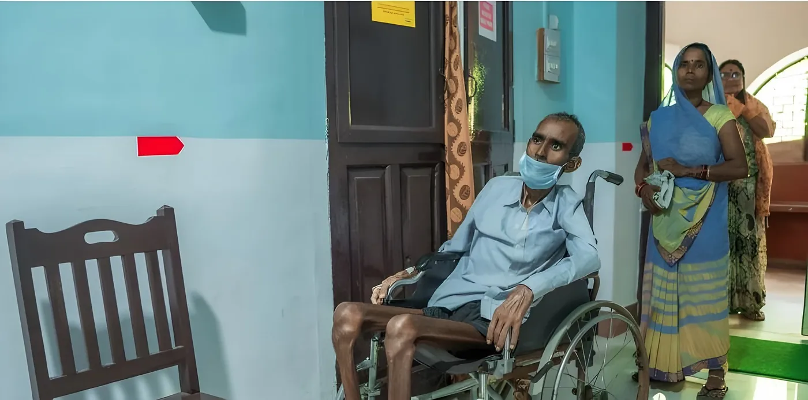

Comprehensive and compassionate healthcare
Quality healthcare at an affordable cost, with emphasis on the poor and marginalized, patient-centred care, safety, dignity and ethical medical practice.
Specialist care for the whole family
All services
The hospital provides services through various clinical and diagnostic departments.
Timely investigation, diagnosis and treatment

Holistic, compassionate and dignified patient care
Palliative nursing care, counselling and mental health support, with palliative care services being developed further during 2025–26.
Systems behind safe, efficient care
The hospital continues to work towards maintaining quality standards through systematic processes related to infection prevention and control, biomedical waste management, patient safety, documentation and continuous quality improvement.
The hospital has introduced and strengthened digital systems for attendance, maintenance requests, asset management and other administrative processes to improve operational efficiency and accountability.
Saturday · 08:00 am – 11:30 am
07682-244311